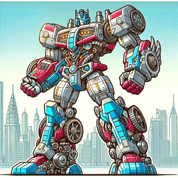

Are you having trouble identifying your favorite Transformer? Use this neural network to identify it!
Upload a picture or take a picture with your mobile device, or even use a webcam on a desk/laptop.
The model will run and see if it's Optimus, Megatron, Soundwave or Bumblebee!
The model works best on pictures of toys in robot mode. I've had near 100% accuracy for the four characters above, regardless of toyline
(vintage, generations, RID, Cyberverse, etc). Works okay for illustration/screen caps of characters.
Bumblebee and Soundwave (and maybe Optimus) should work in alt mode as well.
The Tensorflow model, MobileNet, is used as a base and it is fine-tuned to recognize transformers.
If you have any requests for figures to add, drop a comment at my Github repository:
here!
or use this button to upload an image or to use your mobile camera:
Your image will appear below.

Click here to capture
This is the work of Dr. Mauricio Cafiero and may be used widely though attribution is appreciated.